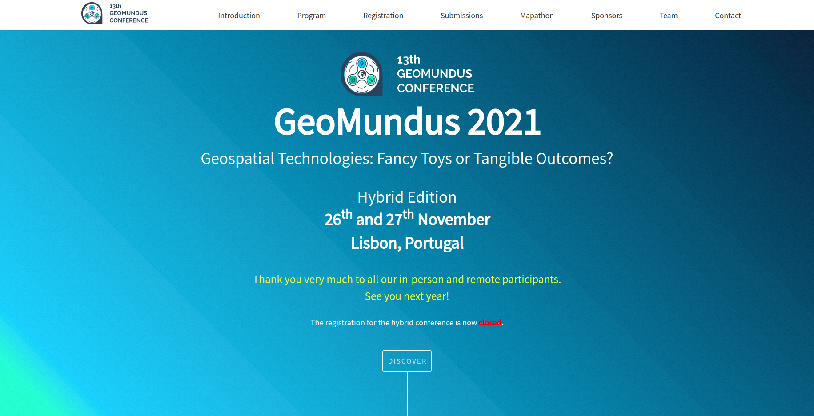

Alba Vilanova Cortezón
Software and web developer for Earth
Experience
Barcelona, Spain
Development of the Python tools of the Earth Sciences
Department for the evaluation and visualisation of air quality
data. I am currently contributing to Providentia, a software
that performs benchmark analysis of atmospheric composition
experiments, and NES (NetCDF for Earth Science), a library to
read and write datasets in parallel and perform geospatial
operations. I am also the main developer of the web portal
which shows the national air quality forecast.
Sankt Gallen, Switzerland
Development of meteorological products, such as the sandstorm
and blizzard warnings and the meteor shower visibility index,
along with the computation of forward and backward wind
trajectories to find out which are the affected areas after
the release of harmful components to the atmosphere (e.g.
volcanic eruption, nuclear explosion).
Freiburg, Germany
Development of the open-source toolbox Open Energy Modelling
Framework for the optimization of photovoltaic solar hybrid
systems.
Daejeon, South Korea
Numerical analysis of the performance of the solar power
plants in South Korea to derive the relationship between the
power generation and the solar global horizontal irradiance
within the New and Renewable Energy Resource Map Laboratory.
Education
Degrees

Postgraduate Course in Full-Stack Web Technologies
02.2024 – Present
Master’s Degree in Geospatial Technologies
09.2020 – 03.2022

Associations
- Web development team leader, principal organizer and host (2021), GeoMundusConference
- President (2018) and exchange coordinator (2017), IAESTE LC Lleida
- Linguistic volunteer (2017), Linguistic Service
Languages
Me gusta desarrollar webs bonitas
M'agrada desenvolupar webs boniques
I like to develop beautiful websites
Es macht mir Spaß, schöne Websites zu entwickeln
Gusto kong gumawa ng magagandang website
Projects
Web development
Software development
Air quality forecast dashboard
I have been the main developer of the
dashboard that shows
the air quality forecast in the Iberian Peninsula, Catalonia and
Barcelona since 2023 while working at Barcelona Supercomputing Center.

GeoMundus Conference
I lead the development of the website
for the GeoMundus Conference in 2021.
This conference is organized by the students of the Master's degree in Geospatial
Technologies every year to share the state of the art scientific research,
knowledge, and skills in the fields of Geospatial Technologies, Geoinformatics, and
Geosciences.

Personal blog
Created back in 2019,
albavilanova.es
was my first (official) site and its main goal was to encourage
Spanish people to study, work and travel abroad and help them in
the process. In 2024 it is receiving about 1000 views per month.